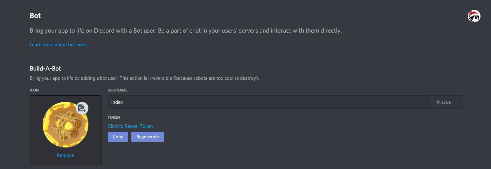
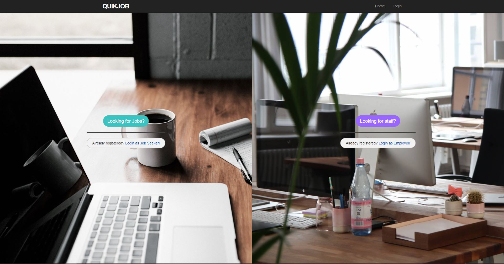
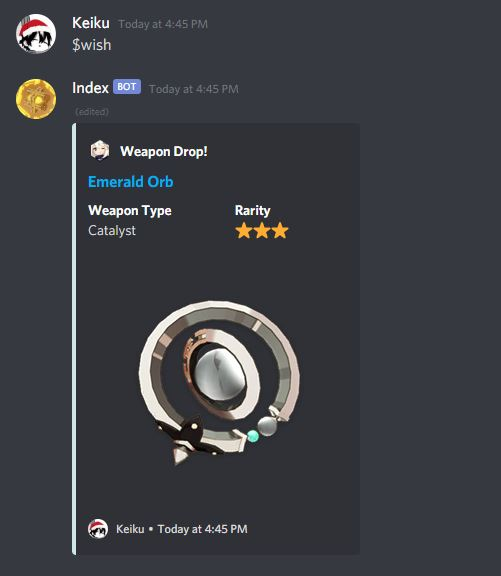
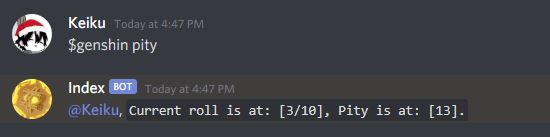
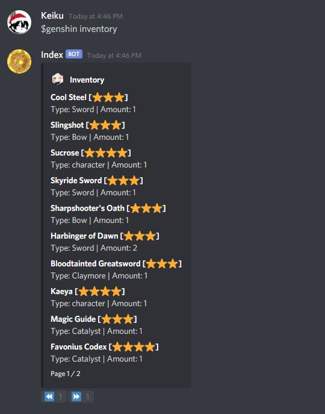

Who Am I?
My name is Kevin Huang and my interest in coding first began when I discovered
a program called Rainmeter which allows you to customize desktop
widgets. During my final year in highschool I took a class in computing where I learned the basics of pseudocode.
Deciding I would continue with my hobby, at RMIT University I undertook Bachelor of Computer Science, learning the fundamentals of object-oriented programming in Java.
Then gaining knowledge on web programming, which involved HTML, JS, PHP and CSS. Wishing to further my improve my skills I
took an elective in Ruby on Rails. This propelled my interest towards web development.
Interesting facts!
- Graduated University at 19 years old.
- Bilingual - English | Mandarin.
- Originally from South Africa.
- Can fold tiny paper cranes.
Projects
Cool Stuff I have worked on!

Discord Bot
Discord bot with many planned features, constantly being updated. The main feature of the bot is currently acting as a
"Gacha" simulator for the popular game Genshin Impact. This is all
done with the same in-game odds for the different drops as well as including "pity" rolls where a rarer character/weapon is guarenteed
after a certain number of attempts. Click here for commands.
- Language - JavaScript [Node.js]
- Storage - Locally as JSON Files, planned move to MongoDB
Live Link

QuikJob
QuikJob is a final year Capstone Project I developed alongside two others. This web application was created as a
way for employers to find potential staff in a fast and easy way. This is different to your traditional job seeking
sites as it suggests you jobs based on what skills you have listed your profile, which is all done with a simple
matching algorithm. It also works the other way around by allowing employers to get a list of all job seekers with
the skills listed on jobs they have posted.
- Framework - Ruby on Rails
- Language - HTML | JavaScript | CSS | Ruby
- Storage - PostgreSQL
- Deployment - Heroku
Live Link
Source Code
Connect 4 AI
Already given the Connect 4 game itself, our task was to create an AI that would play against us and other students' AI.
The AI would make a the best move possible with the combination of a minimax algorithm and a board evalution technique.
My AI's weakness is that it plays defensively as the points rewarded for a good move is lower than that of losing the game.
Source Code
Work Experience
Dumpling King
Worked there part time during my studies. Initially started as a waiter but was later promoted to shift manager. During my time
there I able to pick up skills such as:
- Customer Service
- Management
- Improved Mandarin
- Working efficiently under pressure
- Communication Skills
List of commands
| Command |
Description |
| $wish |
Perform a single roll.

|
| $wish 10 |
Perform a series of 10 rolls - Which guarentees at least a 4 star drop. |
| $genshin pity |
Displays the users current pity numbers.

|
| $genshin inventory |
Shows all current weapons and characters the user owns. Paginated at 10 items per page.

|
| $choose arg1 arg2 arg3 |
Randomly selects one of the given arguments.

|
| $flip |
Flips a coin
|